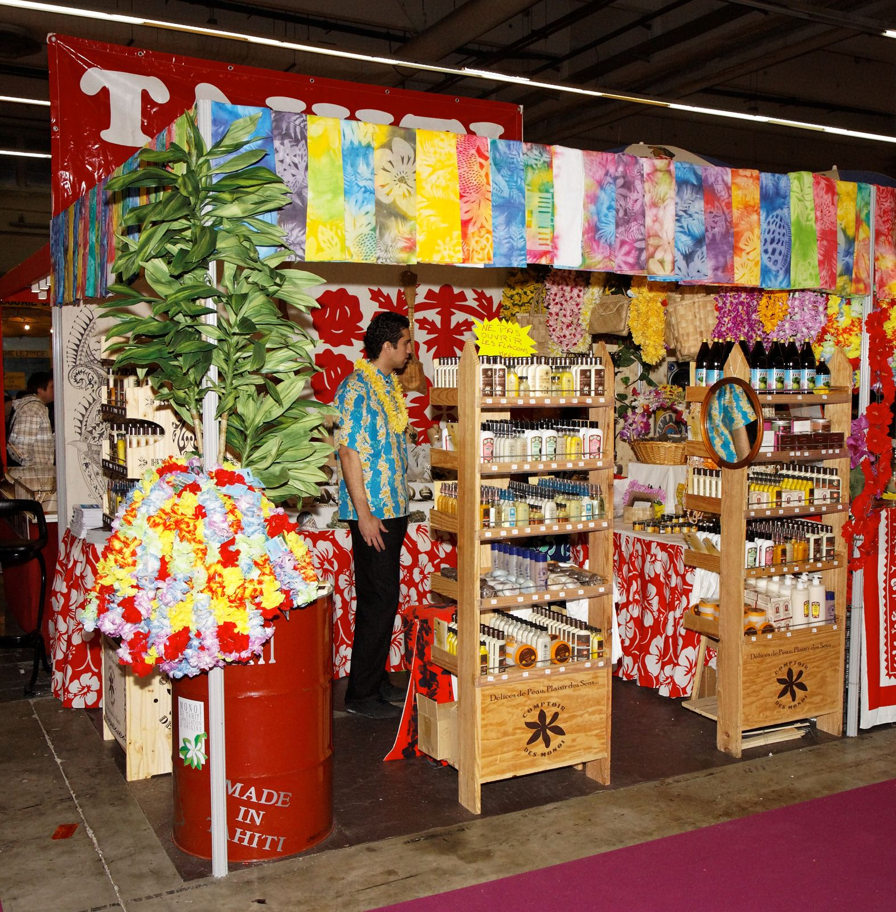

Expos · Expos
Salon International de l'Agriculture 2027 (Paris International Agricultural Show)
- Dates
- –
- Venue
- Paris Expo Porte de Versailles, 1 Place de la Porte de Versailles, 75015 Paris
- Location
- Paris, France
- Format
- In-person
- Category
- Expos
- Industry
- Agriculture and food show (trade and public)
- Organiser
- Comexposium / CENECA
- Price
- 2027: full rate €17; Pro 1-day €17; Pro 2-day €34; children 6–12 €9; student/school €10; under-6 free.
- Expected attendance
- 437,402
- Official website
- https://www.salon-agriculture.com/en
- Tickets
- https://www.salon-agriculture.com/en/pratical-information/ticketing
About
Dates are local to the host city. 63rd edition; Serbia is country of honour. Open to the public every day 9:00–19:00.
Topics: agriculture, food, livestock, agritech.
Previous-edition official figure: 437,402 visitors over 9 days in 2026 (an edition without cattle). Not a 2027 forecast.
Sources
- Official — https://www.salon-agriculture.com/en
- Official — https://www.salon-agriculture.com/en/pratical-information/ticketing
- Official — https://www.salon-agriculture.com/fr-FR/infos-pratiques/dates-lieu-plan-horaires
- Attendance — https://www.salon-agriculture.com/en/news/opening-registration-2027